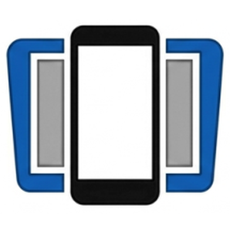
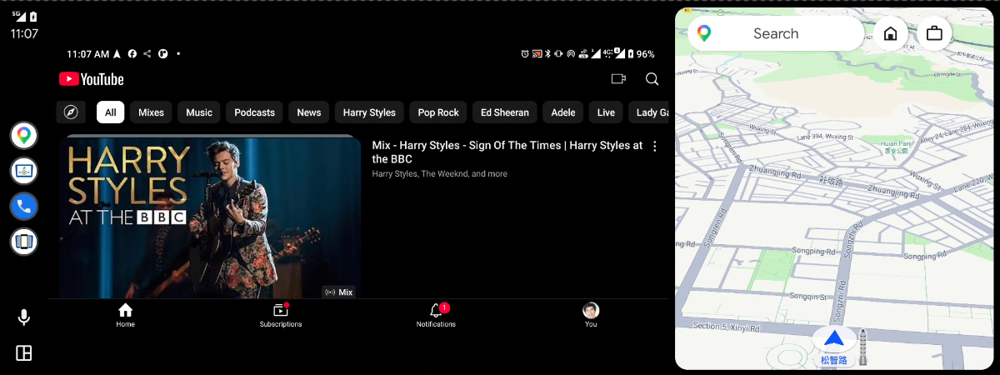
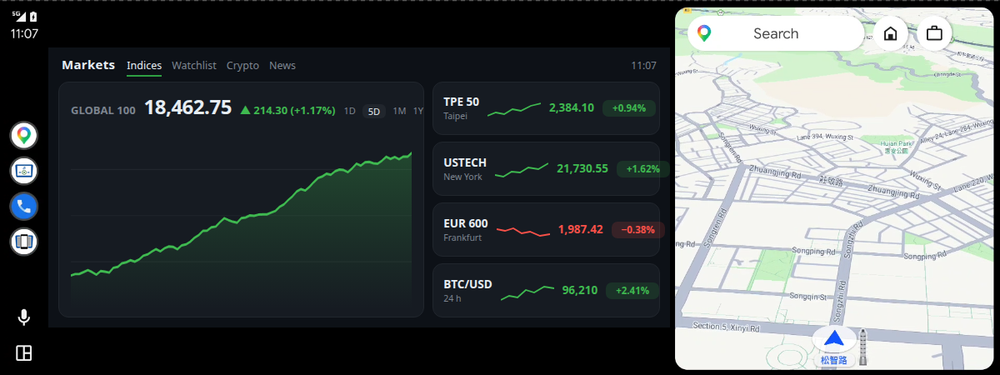
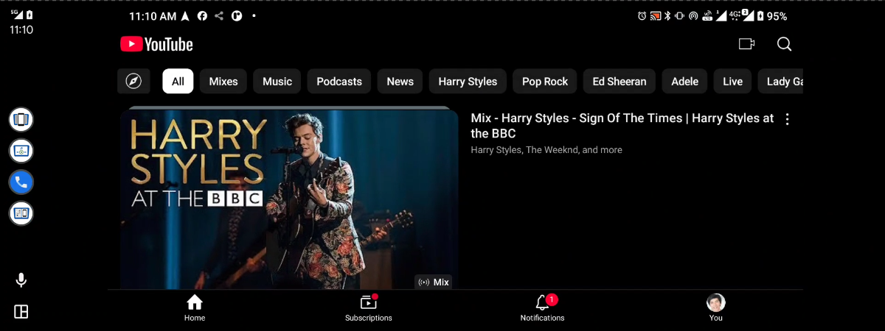
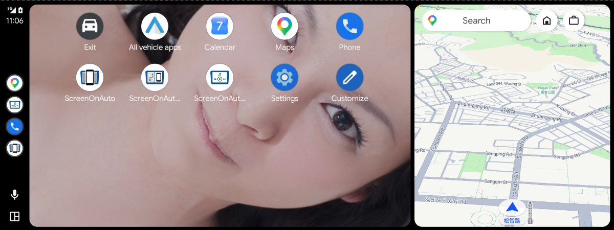
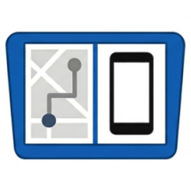

ANDROID · ANDROID AUTO · SCREEN MIRRORING

ScreenOnAutoMirror your Android phone screen to the Android Auto display, with support for media button controls.
Free to use — no features require additional payment.




Show your phone screen on the car display — full screen, or side by side with the map.
Control any media app on the phone from Android Auto's own media panel.
Mirroring starts when the car connects, can open a chosen app, and can start in the background without the app popping up on the phone.
Send just one app to the car instead of the whole screen.
App shortcuts on the car screen, plus Force Landscape, Auto Dim and Back / Home / Recents.
Force landscape (either way round), dim when idle, and keep the phone awake while mirroring.
Trim edges the head unit crops, and keep the picture undistorted in split view.
Start or stop mirroring from Tasker, a shortcut or ADB. How it works →
Tap and scroll the phone from the car screen.
Optional — needs Shizuku or root. Without either, everything else works exactly the same.
The phone's panel goes dark while the car keeps showing the mirror.
Long-press, drag and multi-finger gestures from the car screen. With the virtual touchscreen on, gesture apps such as GMD see them too.
Back / Home / Recents with no Accessibility Service needed.
Reshape the phone to the car's aspect ratio while mirroring — no black bars or distortion.
Shizuku stopped when you plugged in, or the screen won't wake up? See Troubleshooting.
Android Auto only runs apps installed from the Play Store, and Android 14+ blocks the KingInstaller workaround — so install through Google Play's internal testing. It's the same full app as on GitHub, but it isn't searchable on the Play Store: sign up on the install page. A new round opens every 30 minutes, and your install link appears when the round starts. Full steps: Join the Beta Test.
Android Auto requires apps installed via Google Play. A directly-installed APK is rejected; KingInstaller installs APKs while reporting Google Play Store as the installer source.
KingInstaller.apk from its releases page, allow "Install unknown apps" for your browser or file manager, then install it.ScreenOnAuto-*.apk from the latest release, open KingInstaller, pick the APK and tap Install.This works however you installed — sideload or Google Play. On the phone, open Settings → Connected devices → Android Auto → Customize Launcher; you should see these two ScreenOnAuto entries:
| Name | Function | |
|---|---|---|
| ScreenOnAuto | Mirrors the phone screen full-screen — replaces the map area. | |
 | ScreenOnAuto (Legacy) | Mirrors via the Legacy projection path — can run side-by-side with the map. |
Older Android Auto also lists a third entry, ScreenOnAuto Media Controller. If you don't see it, that's normal — media control works either way.
Ready to go? See How to Use for starting the mirror in the car.
| Permission | Required for |
|---|---|
| Screen Capture (MediaProjection) | Screen Mirroring |
| Notification Listener | Media controls |
| Display Over Other Apps | Auto Dim & Force Landscape |
| Accessibility Service | Touch Forwarding & the Back / Home / Recents buttons (not needed with the privileged features) |
Tip: to skip the Screen Capture dialog on every launch, pre-grant it via ADB — see Grant Mirror Permission via ADB. This is also what unlocks Mirror only this app.